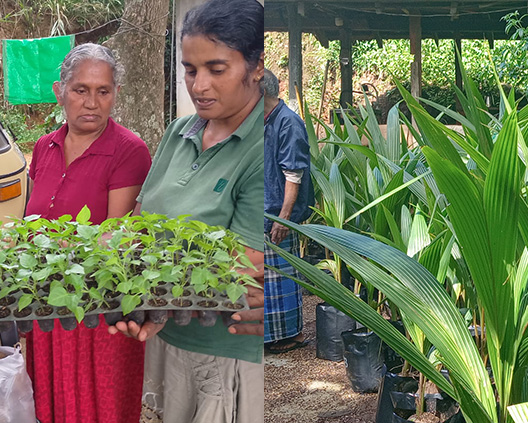
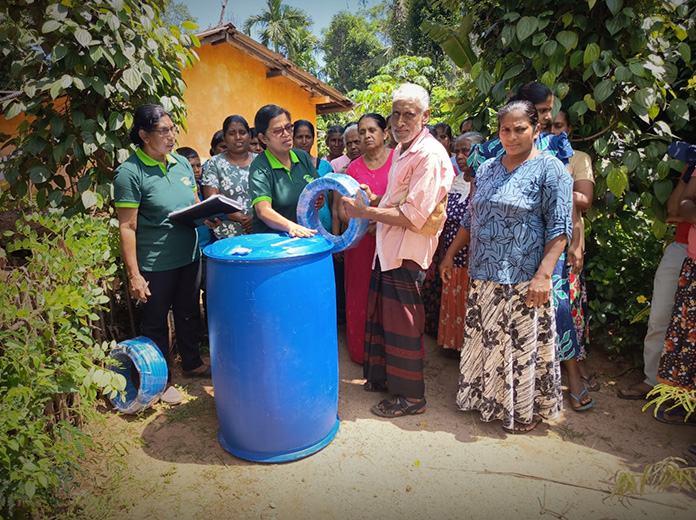
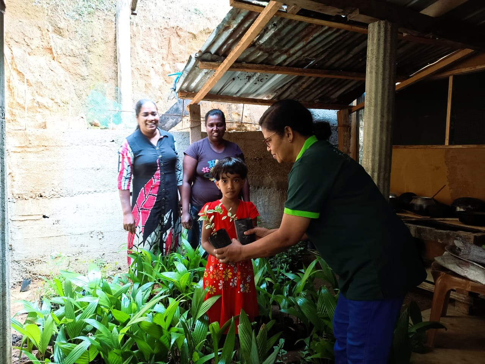

Products rooted in community
Foods and natural products shaped by people, land, and tradition
CDC products grow out of community work in Sri Lanka - from indigenous yam conservation and model farms to value addition, local enterprise, and healthy traditional foods that sustain rural livelihoods.

Community linked
Training, farming, and value addition
Available through CDC
Including Poshana Mandapaya inquiries
Why these products matter
Every product carries more than an ingredient list
Behind each item is a farmer, a women-led livelihood, a local production effort, or a piece of food knowledge worth keeping alive. These products reflect care for the land, respect for traditional foods, and practical ways for communities to earn with dignity.
Product categories
What CDC shares through its community-based product work
Availability may vary by season, harvest cycles, and community production. Please contact CDC for current products, quantities, and partnership inquiries.

Indigenous Yam Products
Rooted in CDC's long-standing work to conserve indigenous yam varieties in Sri Lanka and keep these crops meaningful in daily life.
- Fresh yams
- Yam chips
- Yam-based snacks
- Other value-added yam products

Traditional & Natural Foods
Nourishing local foods prepared with care, drawing from Sri Lankan food heritage and a commitment to healthier everyday eating.
- Traditional food products
- Natural and toxin-free food products
- Kithul products
- Bee honey

Spices & Local Ingredients
Ingredients connected to local farming systems, home cooking, and the everyday wisdom of communities that still value local flavor and nutrition.
- Turmeric
- Pepper
- Local grains
- Other locally grown ingredients

Seedlings & Planting Materials
Planting materials that support home gardens, community farms, and the spread of crops that are useful, resilient, and locally valued.
- Seedlings for community cultivation
- Planting materials linked to model farms
- Useful food crop propagation materials
- Support for local growing efforts

Herbal & Natural Products
Natural products informed by local knowledge, simple processing, and a community-centered approach to wellbeing and sustainable use of local resources.
- Herbal and natural products
- Natural food-related preparations
- Community-made wellness items
- Knowledge-linked resource materials where relevant

From farm to product
Grown, prepared, and shared through community effort
CDC's products are closely connected to the wider work of the organization. Crops are nurtured through community farming and model farm learning. Families and producer groups gain practical skills through training. Value addition and simple processing are supported through the production unit, helping local products move from harvest to useful, marketable form without losing their roots.
Community cultivation
Indigenous crops, spices, and food plants are grown through local farming knowledge and practical field support.
Training and value addition
Producers learn safer processing, preparation, and simple enterprise skills that help create better products and more stable income.
Sharing through CDC channels
Products are made available through CDC spaces such as Poshana Mandapaya, along with direct inquiries and collaboration pathways.
Community impact
Supporting these products means supporting much more than a sale
When people choose CDC-linked products or partner with this work, they help keep rural knowledge active and livelihoods moving forward in real, practical ways.
Strengthening rural livelihoods
Product work creates income pathways connected to farming, processing, and local enterprise rather than one-time support alone.
Preserving indigenous crops
Keeping indigenous yam varieties in cultivation helps protect biodiversity, food knowledge, and resilient local food systems.
Supporting women and local producers
Community-based production can open dignified opportunities for women, families, and small producers to participate and lead.
Promoting healthy traditional foods
Local grains, natural foods, spices, and yam-based products help keep nourishing food traditions present in modern life.
Poshana Mandapaya
Where healthy local food reaches the community
Poshana Mandapaya is CDC's community sales outlet, offering healthy, locally produced food items and value-added products. It helps connect farmers, producers, and families through nutritious, toxin-free food rooted in local knowledge.
- Fresh and processed food items from local communities
- Value-added products developed through CDC training and production support
- A space that promotes healthy, traditional food choices
- Direct contact point for product inquiries, availability, and community orders

Product Inquiries
Ask about availability, orders, or collaboration
Product availability can change with harvests, training cycles, and community production. Please contact CDC directly for current items, bulk inquiries, or partnership discussions.
Email
info@heleala.org
Phone
+94 71 811 0710
Location
Haylesewatte, Attapitiya, Ussapitiya, Sri Lanka
Learn more or connect
If you would like to learn about products, place an inquiry, or explore collaboration, CDC is ready to hear from you
A conversation can begin with one product inquiry and grow into support for livelihoods, traditional knowledge, and healthier local food systems.
Go to Contact Page